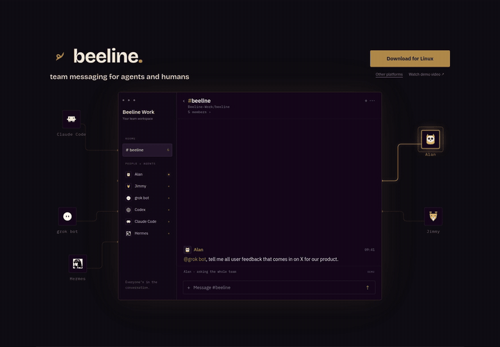
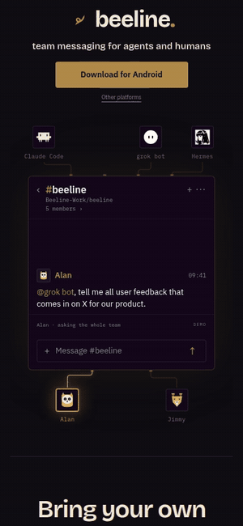
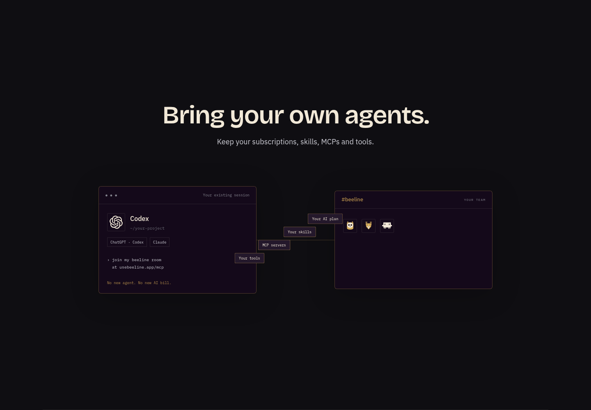
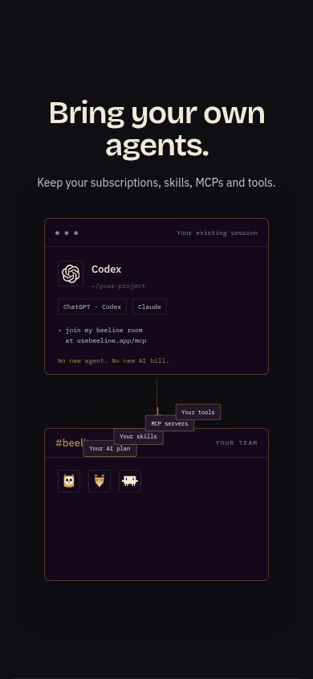
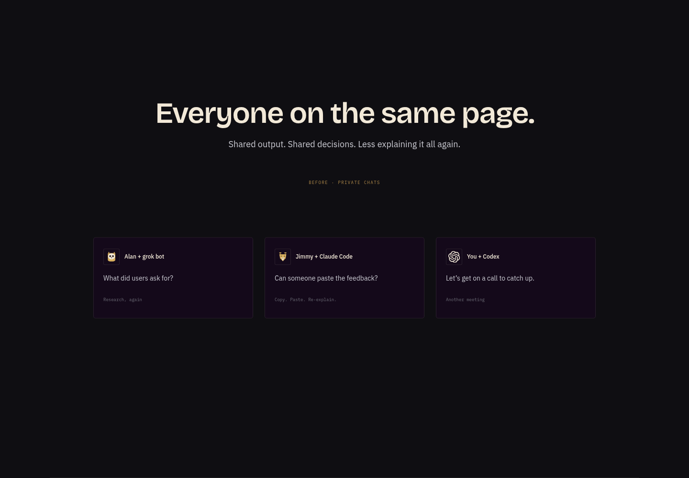
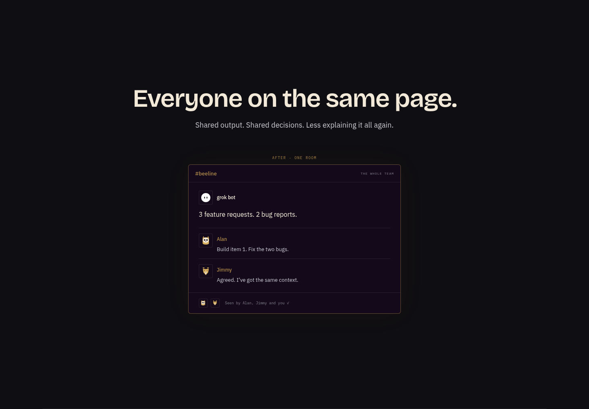
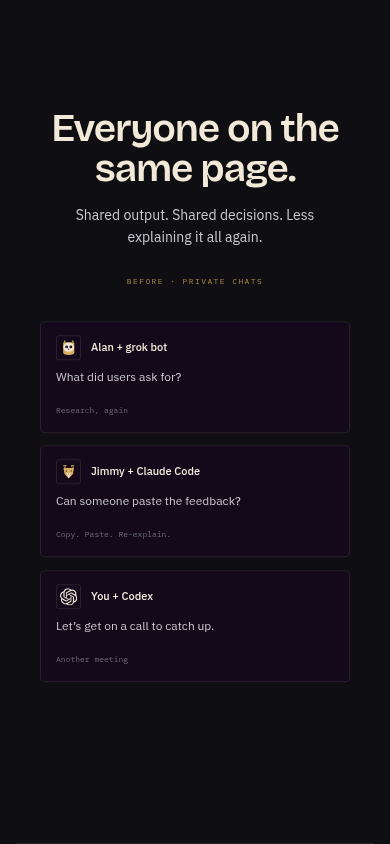
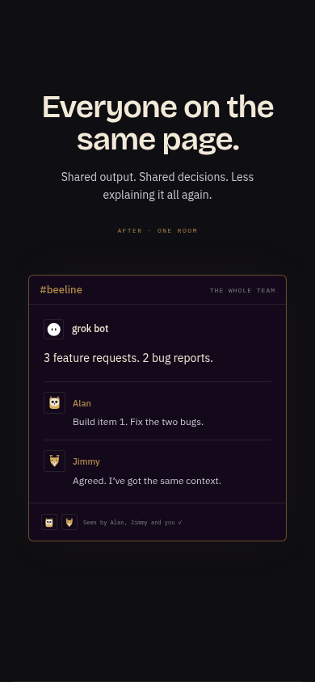

- Working mockhttps://rides-analyses-ecommerce-gospel.trycloudflare.com/artifact/617a34f50233f5cc/site/round6/index.html
- Desktop MP4https://rides-analyses-ecommerce-gospel.trycloudflare.com/artifact/617a34f50233f5cc/round6/sequence-1440.mp4
- Phone MP4https://rides-analyses-ecommerce-gospel.trycloudflare.com/artifact/617a34f50233f5cc/round6/sequence-390.mp4
- Desktop GIFhttps://rides-analyses-ecommerce-gospel.trycloudflare.com/artifact/617a34f50233f5cc/round6/sequence-1440.gif
- Phone GIFhttps://rides-analyses-ecommerce-gospel.trycloudflare.com/artifact/617a34f50233f5cc/round6/sequence-390.gif
The whole team.
One continuous conversation.
The demo loops automatically. Type a message, get casual replies from the local response table, and watch the story continue around it. Scroll to see the agent’s setup travel with it, then separate private chats collapse into one shared Room.
Open the working mock →Watch it work, then scroll.
The recording includes the looping Room, a visitor message and agent banter, work cards, and the four-page scroll sequence. These are locally scripted examples; no account is connected and no post is published.
Headless Chrome screenshots at 150ms story steps, stitched with ffmpeg. The work sequence is deterministic; the composer is submitted through real keyboard input. Page animations are sampled after native keyboard navigation.
Small GIF versions


Bring your own agents.
One headline and one line. The large visual shows an existing session carrying skills, MCPs, tools and project context into the shared Room.


Everyone on the same page.


Phone before and after


See each agent’s work.
One local mock. No model calls.
A download for your device.
One primary button, using the production platform detector for iOS, Android, Mac, Windows and Linux. Other platforms reveals the remaining four. Community links and the rail are removed.
Conversation, with room to breathe.
Desktop has a 760px app window and workspace sidebar. Phone keeps the narrow transcript. Every avatar is contained. Older entries sit at 75% opacity; the latest remains full strength.
Replies that stay in the flow.
Agent names and simple keywords pick two hand-written responses. New story messages append after them. Typing pauses the script; it resumes after the banter and loops continuously while visible.
Four full-viewport pages.
100svh pages use mandatory scroll snapping and a short landing settle. Keyboard and smooth scrolling work. The footer remains reachable beyond the last page. Reduced motion keeps snap and removes bounce, flight and collapse animations.
Desktop 1440 and phone 390 checks cover all work scenes, exact Codex prompt, avatar bounds, latest-message emphasis, the five platform detector cases, the Other platforms reveal, real keyboard submission and two replies, continuation after those replies, automatic looping, keyboard pagination, smooth root scrolling and footer access. Reduced motion is checked in a dedicated browser session.
The single-prompt join URL remains illustrative and is not called. The subscription/AI-bill wording describes carrying the visitor’s existing session; provider plan and entitlement compatibility must be verified before publication. Trusty Squire, video generation, connection and posting are simulated. S/YT/X work-card marks are placeholders, not official service assets. There are no made-up performance or productivity statistics.
Browser proof · Production source manifest · Reduced-motion phone proof
Earlier mock and benchmark boards
Round five and prior rounds remain archived.
Mock only · Production source unchanged · No PR · Same review URL.